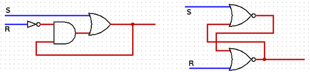

CPSC 220, Fall 2022
Lab 5: Memory Circuits in Logisim
For this lab, you will work with the Logisim program that you used in the previous lab. Last week, you built combinational circuits. This week, you will build memory circuits. A memory circuit is a kind of sequential circuit, since its output can depend on the sequence of past inputs instead of just on the current input.
You will build five circuits: a D-latch, a D-flip-flop, a basic 8-bit register, a four-location RAM, and an 8-bit register that can take its input from several different sources. Logisim already includes similar pre-defined circuits, but the point of the lab is to build the circuits of yourself, starting from basic logic gates.
The lab is due next Thursday as usual. (But because of the test next Wednesday, requests for short extensions will likely be granted.) You should create a single file named lab5.circ containing the five circuits that you create for this lab. To submit your work, copy your lab5.circ file into your homework folder in /classes/cs220/homework.
Circuit #1: D-Latch
We covered D-latches and D-flip-flops in class. You will start by making a D-latch circuit for this exercise. Start up Logisim and use the "Add Circuit" command from the "Project" menu to create a new circuit named "D-Latch".
Warning: The memory circuits that you build for this lab might show errors on some of the wires until their Load/Clock inputs are turned on and off to store a value in the circuit. This is normal.
Recall that a D-latch has two inputs, Data-in and Load. It has one output, Data-out. The operation is this: As long as Load wire is ON, the value of Data-out is that same as Data-in. When the Load input is OFF, Data-out cannot change. Basically, the circuit is a 1-bit memory that stores the value that is on the data-in wire at the time that the clock input is turned off. As a memory, its operating rule is: Place the value that you want to save on Data-out, then turn Load on and off; the stored value is then protected as long as Load is off.
A D-Latch can be built from an S-R (or "Set/Reset") latch plus some added circuitry. (In an S-R latch, turning the Set input on and off stores a 1, and turning Reset on and off stores a zero.) Start your circuit with an S-R latch, using either of the two designs from class. (One design uses two NOR gates. The other uses an OR gate, an AND gate, and a NOT gate.) Recall that the two versions look like this; use the one you like:

Add the Data-in and Load inputs and the Data-out output. (Please add labels to your inputs and outputs.) You can then add the extra circuitry that you need for a D-Latch: Two AND gates and a NOT gate. The extra circuitry is there to make sure that Set is only turned on when both Data-in and Load are on. And Reset should be on only when Data-in is off and Load is on. Be sure to test your circuit to make sure that it works correctly.
Circuit #2: D-Flip-Flop
Use "Add Circuit" to create a second new circuit, named "D-flip-flop". Like a D-Latch, a D-flip-flop has a Data-in and a Data-out, but the Load input is renamed to be a Clock input, and the output can only change on the falling edge of the clock cycle, that is, at the moment that the clock is turned off. (The Clock input is meant ultimately to be connected to an actual clock component, but for now, it will just be a regular input that you will turn on and off by hand.)
The circuit is very simple to build, as we saw in class. (Add two copies of your D-latch circuit. The first latch's output connects to the second latch's input. The flip-flop's Data-in connects to the Data-in of the first latch, while the flip-flop's Data-out connects to the Data-out of the second latch. The flip-flop's Clock input connects to the latches' load inputs, directly to one of the two latches, and through a NOT gate to the other latch. Where you put the NOT gate determines whether the output changes on the rising clock edge or the falling clock edge. For this lab, you want it to change on the falling clock edge. Again, test your circuit to make sure that it works!)
Circuit #3: Basic 8-bit Register
Next, add a new circuit to your project named Register, and construct an 8-bit register. The register should have an 8-bit Data-in input and an 8-bit Data-out output. It has a one-bit Clock input that connects to all eight registers. It can be built using 8 D-flip-flops and a couple of Splitters.
Circuit #4: Four Location RAM
For the fourth circuit, add another circuit to the project named RAM. You should build a four-location addressable memory, with each location holding an 8-bit number. We looked at the basic structure for the circuit in class.
The RAM will contain four copies of your 8-bit Register. Each register is a location in the RAM and has an address: 00, 01, 10, or 11.
There will be: a 2-bit address input that specifies a location; an 8-bit data-in input, used to specify a value to be stored in the selected location; an 8-bit data-out output, which shows the value currently stored in the selected location; and a 1-bit clock input.
To store a value, that value has to be on the data-in input, and the clock input must turned on and off. The value is stored in the location specified by the address.
(I should note that actual RAMs, like the memory in your computer, are built in a more efficient way.)
Circuit #5: Multi-input Register
A register in a CPU can often take its input from several different sources, depending on the instruction that is being executed. For that to be possible, of course, there must be "select" control wires that specify which of the inputs is actually stored into the register. The source of the input can be selected using a multiplexer. All the possible inputs are inputs to the multiplexer, and the output of the multiplexer is the selected input for the register. (An alternative to using a multiplexer would be to design your own control circuitry, which might be more efficient in this case; however, I suggest using a standard Logisim multiplexer component.)
You can build your multi-input register as the "main" circuit of the file that you are creating. (Double-click "main" to open that circuit for editing.)
Add a copy of your 8-bit register to the circuit, to use as a basis for the new circuit. The register will have four possible sources of input. To control the input to the register, you can use a standard Logisim multiplexer component, with its "Data Bits" set to 8 and its "Select Bits" set to 2.
The circuit will have an eight bit Data-in input, an eight bit Data-out output showing the current value stored in the register, a two bit Select input to select the source of input to the register, and a Clock input connected to the Clock input of the register.
When the Clock input is turned on and off, a new value is stored in the register on the falling edge of the clock. There are four possible sources for the new value. Which value is stored depends on the value of the Select input, which can be 00, 01, 10, or 11. Here is how the value stored in the register should correspond to the Select value:
- 00 — The new value comes from the Data-in input.
- 01 — The new value is zero; the value can come from a Logisim Constant component set equal to zero.
- 10 — The new value is the current value plus 1; the value can be computed using a Logisim Adder component and a Constant component with its value set equal to one.
- 11 — The new value is the current value shifted right one bit position, with a zero to fill in the vacated spot on the left; the value can be computed using a couple of Splitters and a Constant set equal to zero.
As always, be sure to test your circuit!